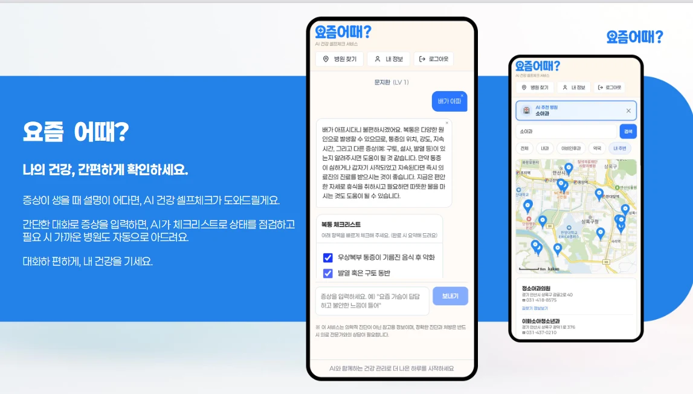
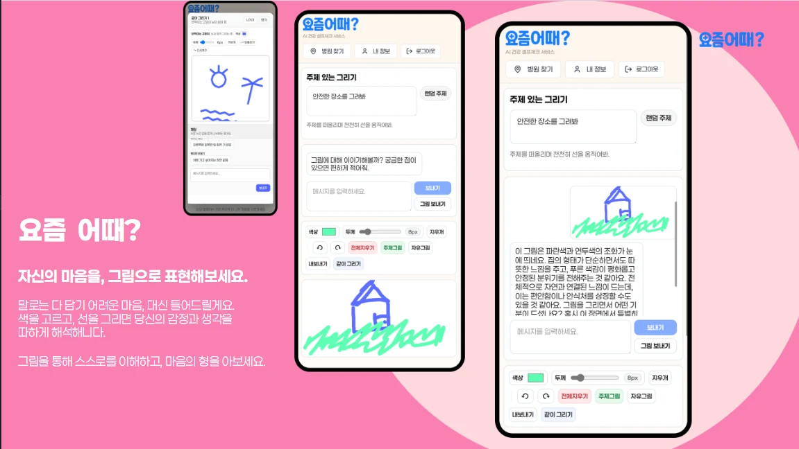
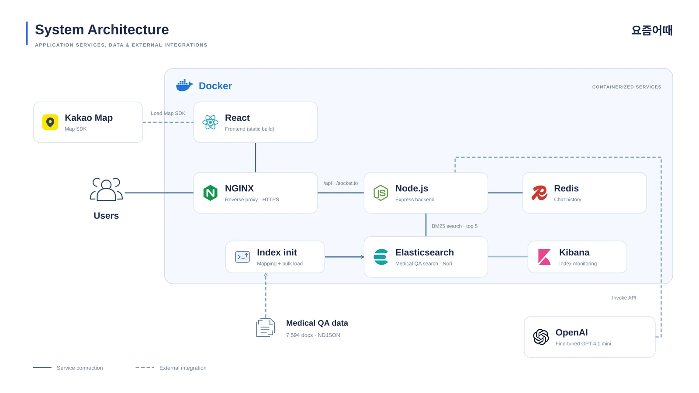

"검색 대신 30초 체크"를 목표로 한 건강 상담 서비스입니다. 증상을 입력하면 의료 QA 7,594건에서 관련 자료를 찾아 [출처 N] 번호와 함께 LLM 답변의 근거로 연결하고, 상담 내용을 바탕으로 진료과와 주변 병원 · 약국을 안내합니다.
5인 팀(백엔드 · 프론트엔드 · 마케터 · AI 2명)에서 데이터 작업 전체를 맡았습니다. 검색에 쓰는 의료 QA를 정제해 검색 엔진에 넣을 형식으로 만들고, 증상-질환 학습 데이터를 구성해 KoELECTRA 분류 모델과 GPT-4.1 mini 파인튜닝에 썼습니다. 파인튜닝한 모델은 상담 API의 기본 모델로 쓰였습니다.
대상2025 SUMTECH 해커톤 (정보통신기획평가원장상)
7,594건검색용 의료 QA (7개 분야)
18,990문장증상-질환 학습 데이터 (10개 질환)
문제 정의
병원 방문의 부담 - 가벼운 증상은 시간 · 비용 때문에 병원 가기를 미루게 됨
믿기 어려운 정보 - 인터넷 건강 정보는 광고가 많아 신뢰하기 어려움
판단의 불안 - 증상이 얼마나 심각한지 스스로 판단하기 어려워 방치하거나 진료가 늦어짐
타깃 - 타지에서 생활하는 대학생을 1순위로, 어린 자녀를 둔 부모, 노인을 부양하는 보호자로 확장
주요 화면

증상 상담: 의료 QA를 출처 번호와 함께 답변에 연결

병원 · 약국 안내 등 추가 기능
검색 데이터: 의료 QA 7,594건
LLM이 의료 정보를 지어내지 않도록, 답변 근거로 쓸 전문 의학 QA를 검색 엔진에 넣을 수 있게 정리했습니다. 분야별 폴더의 JSON을 모두 읽어 공백 · 줄바꿈을 정리하고, 질문 + 답변 해시로 중복을 지운 뒤, 질문 · 답변을 합친 검색용 text 필드와 분야 정보를 붙여 일괄 업로드용 NDJSON으로 만들었습니다.
분야별 문서 수 (원본 폴더 기준)
외과
3,018
신경과 · 신경외과
1,731
정신건강의학과
1,564
안과
612
이비인후과
445
병리과
120
의료법규
104
문항 유형은 객관식 5,826 · 서술형 921 · 기타 847건입니다. 질문 길이는 중앙값 178자, 답변은 중앙값 17자로 짧은 정답형이 많습니다. 7,594건 모두 해시와 문항 ID가 서로 달라 중복 없이 올라갔습니다.
학습 데이터: 증상 → 질환 18,990문장
증상 문장과 질환명이 짝지어진 데이터에서 10개 질환을 골라 학습 13,306 · 검증 2,793 · 테스트 2,891문장으로 나눴습니다. 문장은 중앙값 47자로 짧고, 질환별 건수 차이가 큽니다.
질환별 학습 문장 수
편두통
4,822
아토피성 피부염
2,168
음식 알레르기
1,960
만성 기침
1,920
두통
691
변비
387
우울증
381
이석증
339
불안 장애
333
염좌
305
가장 많은 편두통과 가장 적은 염좌의 차이는 약 15.8배입니다. 검증 · 테스트도 비슷한 비율입니다.
데이터 점검 결과 (대회 후 다시 계산)
항목
학습
검증
테스트
문장 수
13,306
2,793
2,891
출처 문서 수
7,345
1,542
1,595
질환명이 남은 문장
102 (0.8%)
12 (0.4%)
8 (0.3%)
조사로 시작하는 문장
4,585 (34.5%)
934 (33.4%)
925 (32.0%)
학습 · 검증 · 테스트 사이에 겹치는 출처 문서는 0건입니다. 다만 서로 다른 문서에서 나온 같은 문장이 학습과 테스트에 63개 있습니다. "조사로 시작하는 문장"은 질환명을 지운 자리에 조사만 남은 경우입니다(예: "의 주요 증상에는 …").
분류 모델 결과 (대회 후 재현)
대회 때 KoELECTRA 평가 결과를 기록하지 않아, 같은 학습 스크립트와 데이터로 설정을 바꾸지 않고 다시 학습해 테스트 2,891문장으로 평가했습니다(KoELECTRA-Small v3 · 3에폭 · 시드 1개).
76.9%테스트 정확도
0.40macro F1 (질환별 F1 평균)
4 / 10한 문장도 맞히지 못한 질환
질환별 재현율 (테스트, 위에서부터 학습 문장이 많은 순)
편두통
96.9%
아토피성 피부염
91.6%
음식 알레르기
77.7%
만성 기침
88.1%
두통
18.9%
변비
82.9%
우울증
0.0%
이석증
0.0%
불안 장애
0.0%
염좌
0.0%
문장이 많은 4개 질환은 77.7~96.9%를 맞혔지만, 적은 4개 질환은 0%였습니다. 이 질환들의 문장은 대부분 변비나 두통으로 분류됐습니다. 정확도 76.9%는 많은 질환이 끌어올린 값이고, macro F1 0.40이 불균형의 영향을 보여 줍니다.
테스트 문장 유형
문장 수
정확도
답변에서 뽑은 문장
2,611
82.1%
질문을 고친 문장
280
28.2%
질환명을 지우는 과정에서 다른 글자까지 깎인 "질문을 고친 문장"은 정확도가 28.2%에 그쳤습니다. 데이터 점검에서 본 문장 손상이 실제 성능 저하로 이어진 것을 확인했습니다. 시드 1개로 한 번 학습한 결과라 수치는 조금씩 달라질 수 있습니다.
서비스 구조 (팀)

시스템 아키텍처
검색 - 한국어 형태소 분석기(Nori)에 의료 동의어를 적용하고, 질문 · 답변 · 선택지 필드에 서로 다른 가중치(팀원)
근거 제시 - 검색 상위 3건을 분야 정보와 함께 [출처 N]으로 붙이고, 참고 자료에 없으면 모른다고 답하도록 지시(팀원)
답변 구성 - 상황 요약 · 위험도 · 자기관리 팁 · 권장 진료과 · 응급 신호를 포함하도록 지시하고, 대화 이력은 Redis에 최근 4쌍 보관(팀원)
담당 기술
영역
사용 기술
데이터 처리
Python · JSON / JSONL / NDJSON · 해시 기반 중복 제거
분류 모델
Hugging Face Transformers(Trainer) · KoELECTRA-Small v3 · scikit-learn 지표
의료 QA 전처리 - 7개 분야 JSON → 정제 · 중복 제거 · 검색용 필드 생성 → NDJSON 7,594건
증상-질환 데이터 구성 - 10개 질환 선정, 출처 문서 단위 학습 · 검증 · 테스트 분할, 라벨 매핑(한글 · 영문 · 분야)
KoELECTRA 분류 학습 - KoELECTRA-Small v3로 10개 질환 분류, 정확도 · macro F1 · weighted F1 · top-3 정확도로 평가하고 weighted F1 기준 최적 체크포인트 선택
파인튜닝 데이터 변환 - 같은 데이터를 채팅 형식과 함수 호출(classify_disease) 형식 JSONL로 변환
GPT-4.1 mini 파인튜닝 - 학습 13,306 · 검증 2,793문장으로 파인튜닝. 완성된 모델은 상담 API의 기본 모델로 설정됨(서버 연동은 팀원)
트러블슈팅
① 문장에 정답이 들어 있는 데이터: 출처 문서 단위 분할과 질환명 제거
문제
원본 문장 상당수가 "편두통의 주요 증상은 …"처럼 질환명을 직접 포함했고, 한 문서에서 여러 문장이 나왔습니다. 그대로 쓰면 모델이 증상이 아니라 질환명을 보고 맞히고, 같은 문서의 문장이 학습과 평가에 나뉘어 점수가 부풀려집니다.
원인
증상 문장을 질환 설명 답변에서 뽑아 만든 데이터라, 문장 단위로 섞으면 정답 단서와 거의 같은 문장이 양쪽에 들어갑니다.
해결
문장에서 질환명을 지우고, 학습 · 검증 · 테스트를 출처 문서 단위로 나눴습니다.
결과
세 분할 사이에 겹치는 출처 문서는 0건, 질환명이 남은 문장은 학습 데이터의 0.8%입니다. 다만 다시 점검해 보니 지운 자리에 조사만 남은 문장이 약 34%였고, 질문 문장 일부는 질환명 외의 글자까지 지워져 문장이 깨졌고, 다시 학습해 보니 이 문장들의 정확도가 28.2%에 그쳤습니다(분류 모델 결과 참고).
② 분류 데이터를 대화형 LLM 학습 데이터로: 두 가지 형식으로 변환
문제
원본 데이터는 "증상 문장 · 질환 번호 · 질환명" 형태여서 대화형 LLM 파인튜닝에 그대로 쓸 수 없었습니다.
원인
LLM 파인튜닝은 대화(메시지 목록) 단위 데이터를 받습니다. 또 서버가 결과를 받아 쓰려면 자유 문장보다 정해진 필드가 다루기 쉽습니다.
해결
같은 데이터를 두 가지로 만들었습니다. 하나는 시스템 지시 · 증상 · "질환명(영문명)" 답변으로 된 채팅 형식, 다른 하나는 한글 · 영문 질환명을 인자로 받는 함수 호출 형식입니다. 학습 · 검증 분할은 그대로 유지했습니다.
결과
학습 13,306 · 검증 2,793문장으로 GPT-4.1 mini를 파인튜닝했고, 이 모델이 상담 API의 기본 모델로 쓰인 서비스로 팀은 SUMTECH 해커톤 대상을 받았습니다.
함수 호출 형식 학습 레코드 구조
messages: user(증상 문장) → assistant(tool_calls: classify_disease) arguments: disease_korean, disease_english, confidence tools: 함수 정의 · parallel_tool_calls: false
회고
모델 성능보다 먼저 결과를 좌우한 것은 데이터를 어떻게 나누고 어떤 형식으로 넣느냐였습니다. 같은 데이터라도 문장 단위로 섞느냐 문서 단위로 나누느냐에 따라 평가 점수의 의미가 달라지고, 채팅 형식과 함수 호출 형식은 모델이 배우는 출력이 다르다는 것을 직접 만들어 보며 이해했습니다.
대회가 끝난 뒤 데이터를 다시 점검하며 부족한 점을 정리했습니다.
질환명 제거의 부작용 - 질환명을 지운 자리에 조사만 남은 문장이 학습 데이터의 34%였고, 질문 문장 일부는 "가기 → 기"처럼 다른 단어까지 깎였습니다. 이 문장들의 분류 정확도는 28.2%로 다른 문장(82.1%)보다 크게 낮았습니다. 지운 뒤 문장이 자연스러운지 표본을 눈으로 확인하는 단계가 필요했습니다.
분야 표기 불일치 - 의료 QA에서 원본 폴더의 분야와 변환할 때 붙인 분야 이름이 3개 폴더 4,075건(53.7%)에서 어긋났습니다(예: 외과 폴더 → "내과"). 이 두 값이 [출처 N] 옆에 함께 표시되므로, 변환 후 폴더별로 한 번만 집계해 봤어도 잡을 수 있었습니다.
학습 목적과 사용 방식의 차이 - 모델은 질환 분류 형식으로 학습했지만, 서비스에서는 함수 호출 없이 상담 답변 생성에 쓰였습니다. 함수 호출 형식의 신뢰도(confidence)도 실제 확률이 아니라 질환 번호에 따라 정한 고정값이었습니다.
평가 기록 부재와 불균형 - 대회 때는 KoELECTRA 결과를 기록하지 않았고, GPT-4.1 mini 파인튜닝 전후 정확도도 재지 않았습니다. 다시 학습해 보니 15.8배 클래스 불균형 때문에 작은 질환 4개를 전혀 맞히지 못했습니다. 클래스 가중치나 질환별 표본 수 조정이 필요했습니다.
지금이라면 데이터를 만든 직후 분할별 · 분야별 집계와 표본 확인을 먼저 하고, 테스트 세트로 질환별 정확도를 기록한 뒤 모델을 서비스에 넣겠습니다.